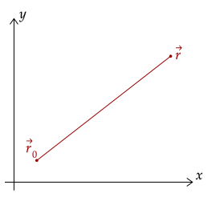
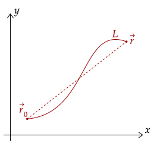
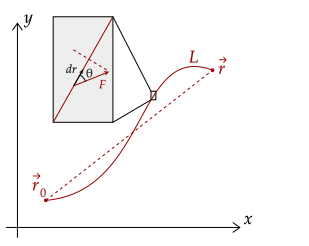

Unlike the integral for impulse, which integrates over the time, which is a one-dimensional scalar, position can be expressed in two dimensions; it is a vector, after all.
Thus, to deal with two-dimensional displacement, we will revert back to the coordinate system with the x-component and the y-component of position. Then, we plot the initial and final position, then we can connect them to get the displacement.

However, since we are moving in two dimensions now, notice there are an infinite number of paths from initial to final position. Since distance is not displacement, every path from initial to final position could have varying path lengths.
Thus, to make this integral truly general, we have to deal with as if we are on a general path, instead of a straight line from initial to final position.

Now, to get the work, let's zoom in on a little portion of that path between the initial and final position. Within this infinitesimal position, a small infinitesimal part of work is done. This infinitesimal work is done by the force at that position and the direction of displacement.
Thus, we can write out the total work done on the object via adding all these infinitesimal work elements.
Another caveat of being in two dimensions is that we can't just assume that they are parallel to one another; thus, we have to use the dot product formation of work. This formation allows us to convert these vectors into scalars, which don't have direction and thus are in some sense always parallel. We write it out as follows.
Now, as we discussed before, there are two ways to deal with this. We can either just multiply it by the cosine of the angle between the two, which aligns it correctly, or we can break both of them into components. Both formulations are useful in their own right; we will use them both later. Thus, we start with the first formation.
What this formation says is that the total work done on an object is the sum of the product of the magnitude of the force and the angle between the force and displacement along every position along the path.
This formation is useful if, for example, you know the magnitude of the force and the angle between the force and displacement along every position.

Exercise 1
Show that the work done by the centripetal force, which points perpendicular to the displacement, displacing an object in a circle is zero.
Solution
Recall that the centripetal force always points perpendicular to the displacement. Thus, θ is 90° for the entire displacement. Note that we can say this because, at any given position along the path, this fact holds true; the displacement vector will point perpendicular to that of the force vector.
Since the cosine of 90 degrees is zero, it brings the entire work to zero.
Exercise 2
Show that the work done by the force of kinetic friction, which points opposite of the displacement, is given by the following, with being the length of the path taken.
Solution
Here, θ is 180° for the entire displacement, as kinetic friction always points opposite that of the displacement.
Since the cosine of 180 degrees is negative one, it makes the entire thing negative. Then, we take out the constant magnitude kinetic friction.
Now, we have to choose how to evaluate the integral. Clearly, we want to evaluate from the start of the path to the end of it. Thus, we choose to evaluate from the initial to the final posiiton.
This is basically telling us then to just sum up all the positions along the path, which gives us the path length.
For the alternate definition, we break the dot product into two components. Like before, we can choose these two components freely. Here, we choose them to be parallel to the axes.
This formation is useful if, say, the force only acts on a certain direction, such as perpendicular to a surface. Overall, these formulations for the integral for work are called line integrals, as they integrate over a path.
Exercise 3
Show that the work done on an object of mass by its weight, starting at an original position displacing it to the point , is the following equation.
Solution
We note that the weight only has a vertical component. Thus, writing out the integral for work, we have the following. We let going up as positive, so weight will point negative.
Here, the horizontal component of the weight drops out, as weight has no horizontal component.
Now, we will integrate from the initial to the final position; these correspond to the initial vertical and final vertical position respectively.
Exercise 4
Show that the work done on an object of mass by the normal force, displaced a distance parallel to the surface, is zero in a reference frame wherein the surface it is on is stationary.
Solution
Noting that the normal force points perpendicular to the surface, it is right to decompose the dot product into perpendicular and parallel to the surface components.
Here, the parallel component of the normal force is zero; it has no parallel component. Further, perpendicular componant of the displacement is zero; it has no component. Thus, overall, the work evaluates to zero.
Notice how the forces we have been integrating are the common forces that we have discussed, with the exception of tension and static friction. Later on, these equations that we have computed will prove useful to us when we examine how these forces doing work affect the motion of an object.